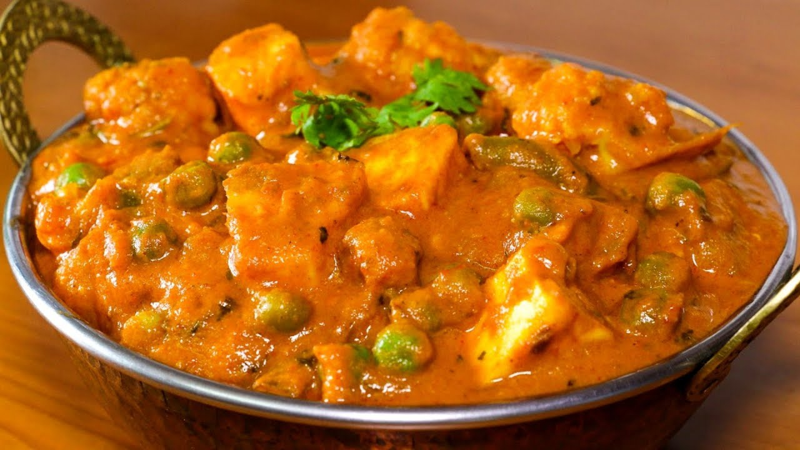

Mix Vegetable

Mix-Vegetable
Mixed vegetables refer to ready to use combination of cut vegetables. The vegetables may be chopped, sliced, cubed or in juliennes. The typical vegetables included in mixed vegetable are cauliflower, carrots, cabbage, French beans and peas.
Go Back